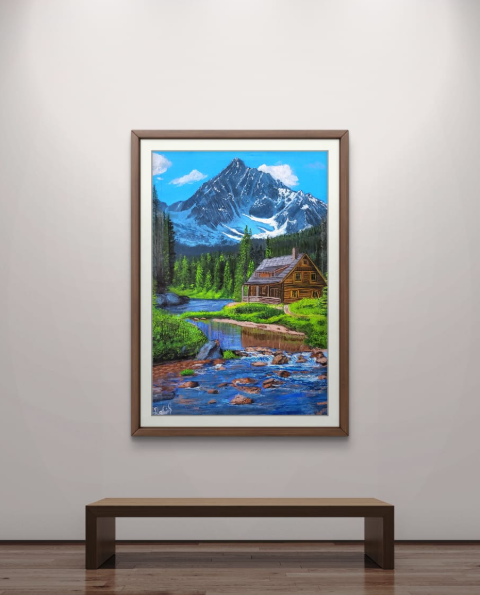
Landscapes
Every piece below is an original, already painted or completed as a past commission. Filter by category, or click any piece for a closer look — then use it as a starting point for your own commission.

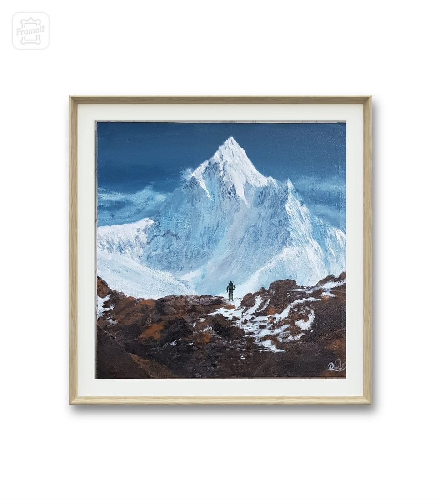
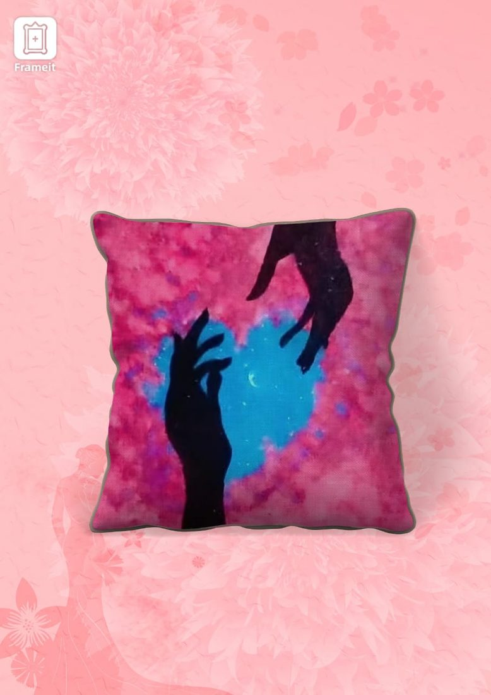
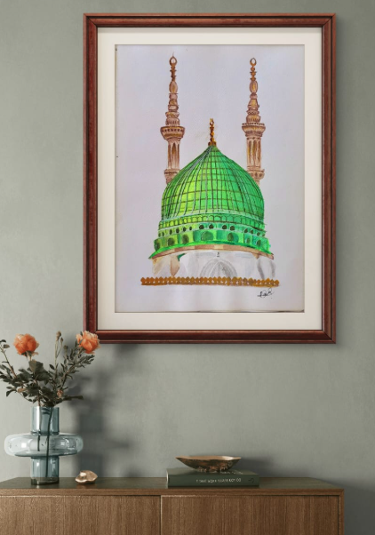
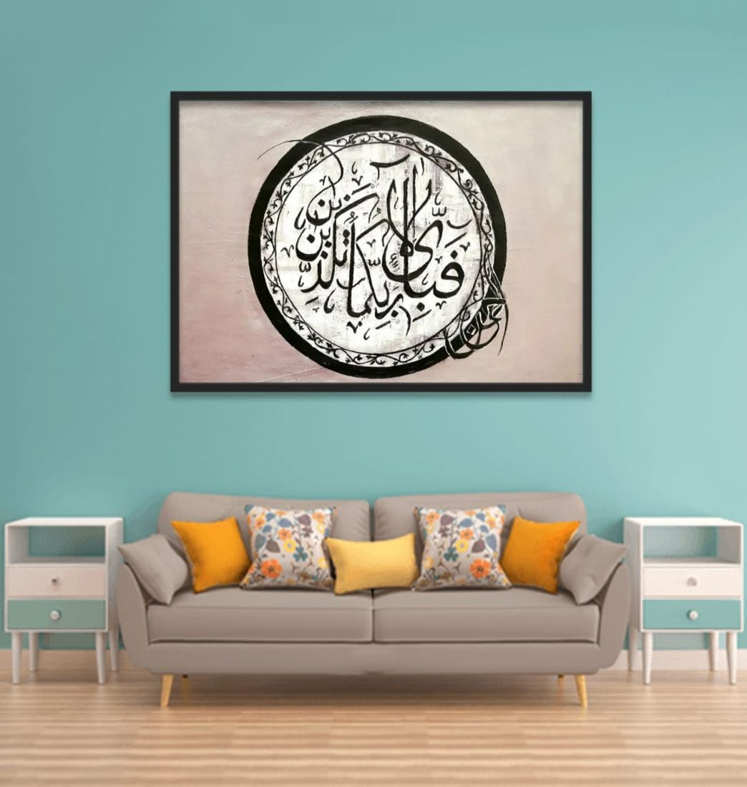
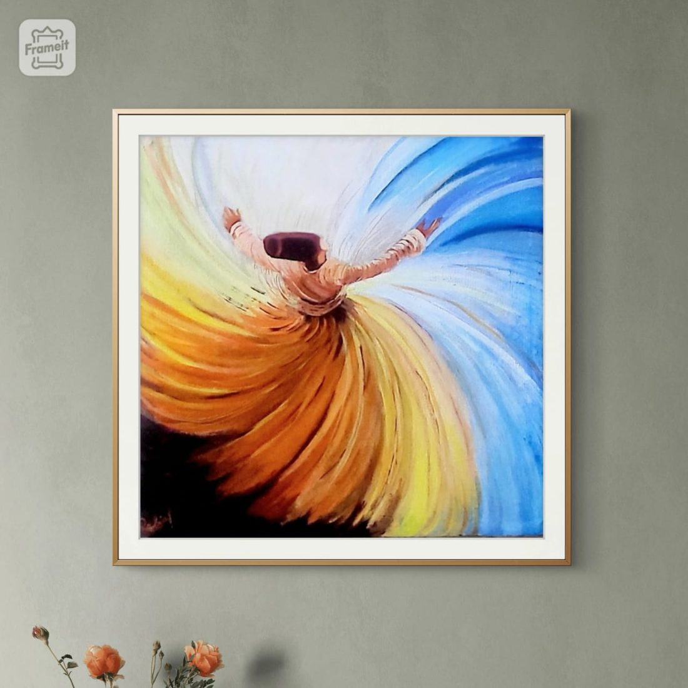
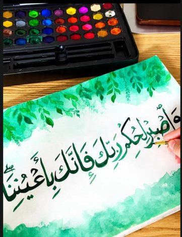
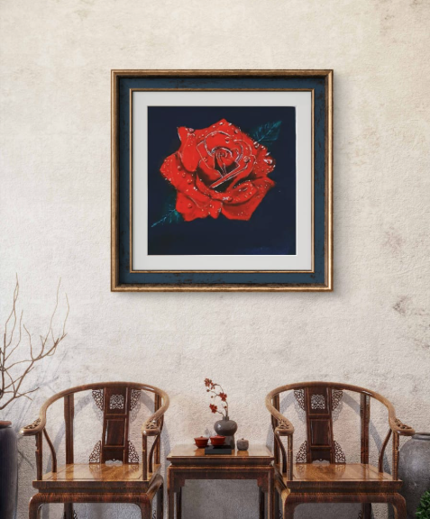
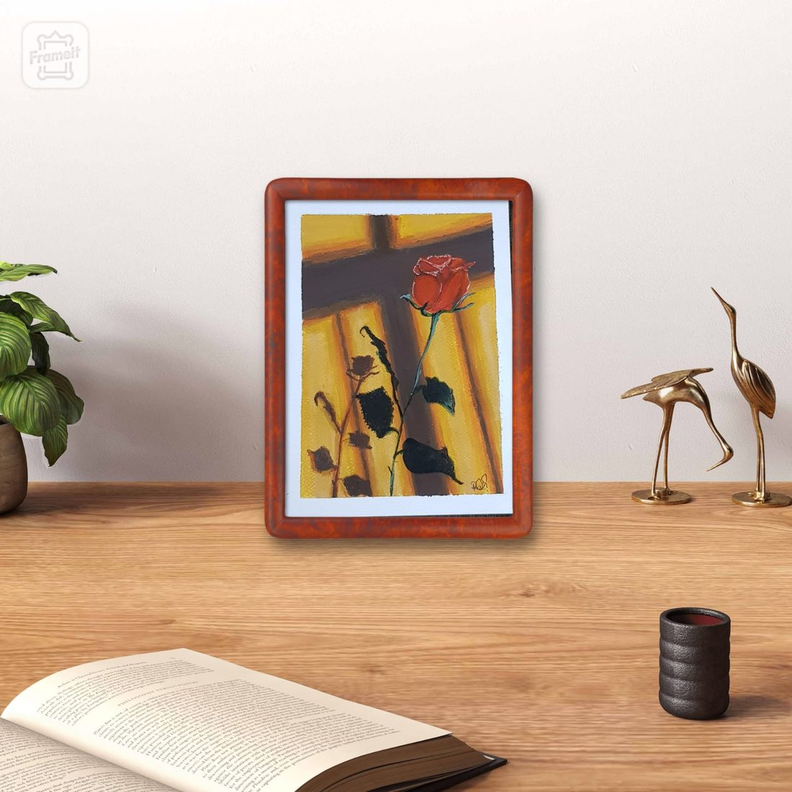
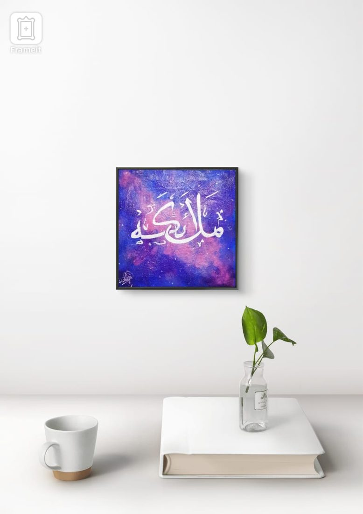
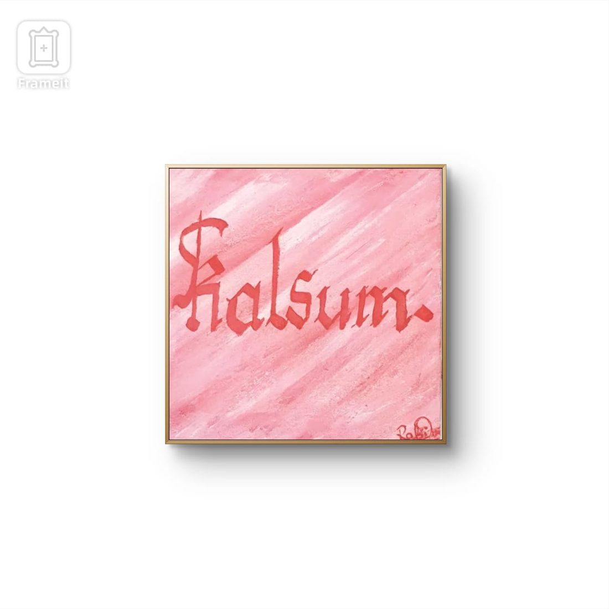
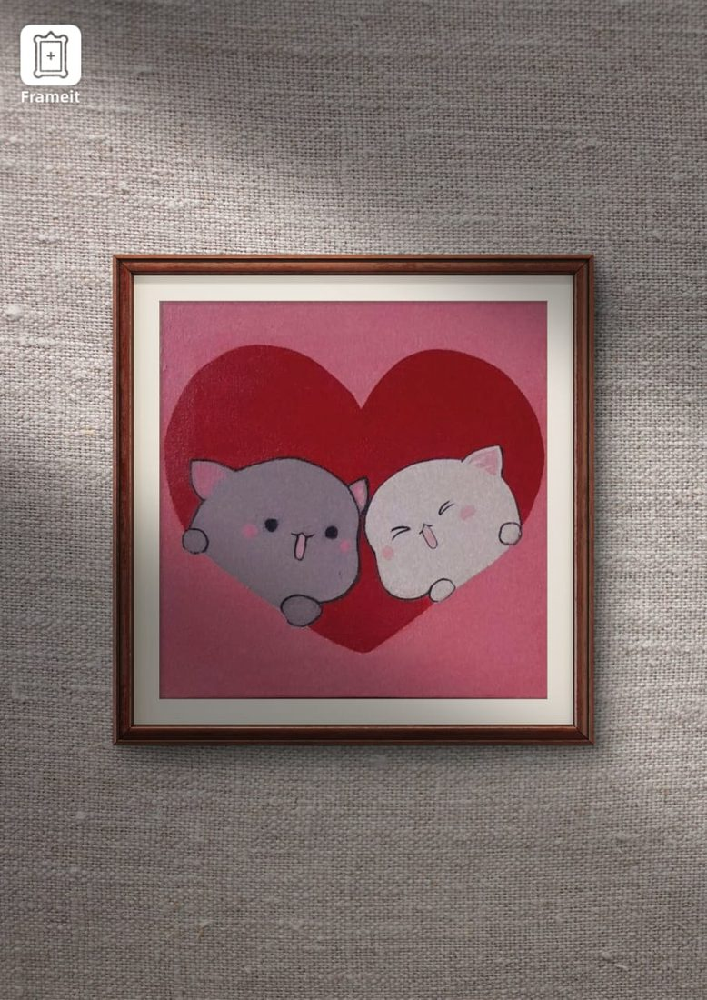
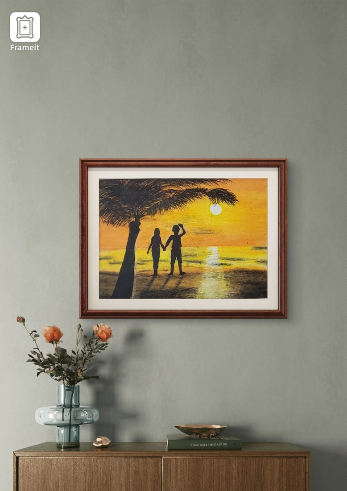
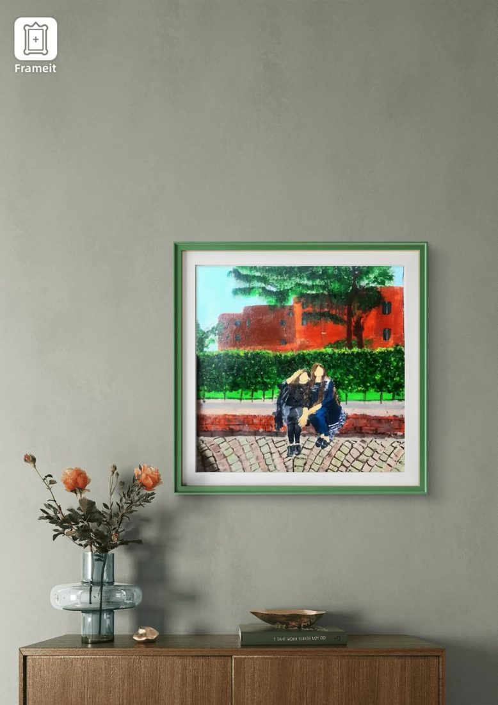
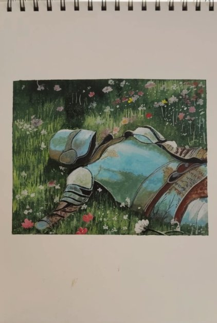
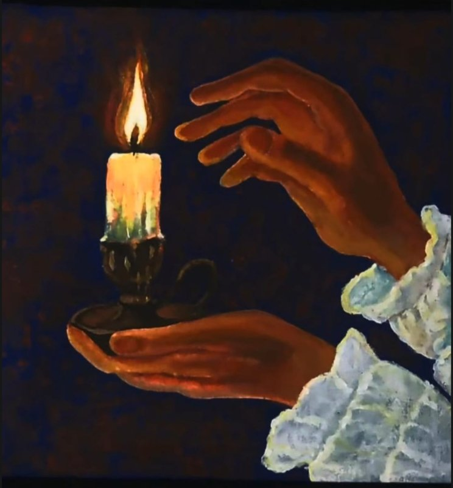
Every commission starts from a piece like this — we'll adapt the size, colours and subject to yours.
Start a similar commission